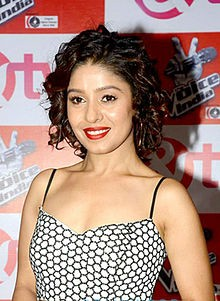

Sunidhi Chauhan

Chauhan at the launch of The Voice India in 2015
Born Nidhi Chauhan
14 August 1983 (age 33)
New Delhi, India
Residence Mumbai, Maharashtra, India
Nationality Indian
Occupation Singer
Years active 1996–present
Home town Delhi, India
Spouse(s) • Bobby Khan (m. 2002; div. 2003)
• Hitesh Sonik (m. 2012)
Musical career
Genres • Pop
• Filmi
Instruments Vocals
Labels • Universal
• Times Music
• Sony Music
• Saregama
• Kunal Agarwal Production
Sunidhi Chauhan (pronounced [sʊnɪd̪iː tʃʰoːhən]; born 14 August 1983) is an Indian playback singer. Born in Delhi, she began performing in local gatherings at the age of four and made her career debut at the age of 13, with the film Shastra (1996). During the year, she won the first singing reality show titled Meri Awaz Suno. She rose to prominence after recording "Ruki Ruki Si Zindagi" from Mast (1999), ultimately winning the Filmfare RD Burman Award for New Music Talent and was nominated for the Best Female Playback Singer.
Her second breakthrough was released in 2000, with the song "Mehboob Mere", for which she received another Filmfare nomination. Through her career, she performed mostly item songs and was described in the media as the "queen of item songs". Chauhan received her third Filmfare nomination with the song "Dhoom Machale" (2004) followed by two more nominations during the next year for "Kaisi Paheli" and "Deedar De". 2006 was one of the most successful years in her career, where she was bestowed with her first Filmfare award for her rendition of the song "Beedi" and further two nominations for "Soniye" and "Aashiqui Main". The following year, she was prominently recognized for the title song of Aaja Nachle (2007) and "Sajnaaji Vaari", both critically and commercially well received.
Chauhan received her 12th Filmfare nomination with "Chor Bazaari" (2009) preceded by "Dance Pe Chance" (2008). 2010 marked her International singing debut, where she was featured in the song "Heartbeat" alongside Enrique Iglesias. During the year, she received her second Filmfare award with the item song "Sheila Ki Jawani" (2010) and was nominated for international styled carnival song "Udi" (2010). In the year, Chauhan appeared as a judge in the 5th season of the Indian television music competition, Indian Idol followed by its 6th season during the year 2012. She also served as a coach in the Indian version of the The Voice.
Being an inspiration to many upcoming singers, her work has received praise from veteran artists and some of her contemporary singers. Besides her career in music, she has also been involved in various charities and social causes.
Early life[edit]
Sunidhi Chauhan was born on 14 August 1983, in New Delhi, India in a Rajput family.[1] Her father, Dushyant Kumar Chauhan, who is from Uttar Pradesh, is a theatre personality at the Shriram Bharatiya Kala Kendra.[2] Her mother, a homemaker, inclined Chauhan to persuade a career in music.[2] She also has a younger sister.[2] At the age of four, Chauhan started performing at competitions and local gatherings, subsequently convinced by her father's friends to take singing seriously.[1] During that time, she was doing live shows and trained herself with "regular riyaaz by listening to cassettes and CDs of popular numbers".[3]
She did her studies from Greenfields Public School and used to stay with her family members.[4][5] She discontinued studies right after schooling to pursue a career in the music industry.[6] She said: "I quit because I did not feel like studying. I made the decision to pursue my dream as a singer and I don't regret it one bit".[7]
When actress Tabassum spotted her, she made her sing live in her show Tabassum Hit Parade and asked her family to shift to Mumbai.[8] She then introduced Chauhan to Kalyanji Virji Shah and Anandji Virji Shah.[9] When she was 11, her dad quit his career and brought her to Mumbai. Initially, the family had financial difficulties in adjusting life to the city. After shifting there, she worked in Kalyanji's academy for few years and became the lead singer in his "Little Wonders" troupe.[10] She was then offered with many shows, though her father insisted on singing for films.[1]
Career
1995–2000: Career beginnings, Mast and Fiza
Chauhan performing at an event in 2006
In 1995, Chauhan performed at the 40th Filmfare Awards with the group "Little Wonders", when music director Aadesh Shrivastava heard her and wanted to record her voice for the film, Shastra (1996).[1] She made her career debut at the age of 13, with the song "Ladki Deewani Dekho" from the film, alongside Udit Narayan.[11] During the year, she won the first singing reality show on DD National titled Meri Awaz Suno, where she was honored with the "Lata Mangeshkar Trophy" for the best female singer of India.[12][13]Besides, she recorded her first solo album, Aira Gaira Nathu Khaira which was ultimately promoted as a children's album.[14]Chauhan then realized her "limitations" and got formal training in classical singing from Gautam Mukherjee.[12] For the next two years, she mostly did background scores.[10]
Chauhan met singer Sonu Nigam, who recommended her to Sandeep Chowta.[15] During the time, Chowta was working as the music director for Ram Gopal Varma's film Mast (1999).[16] Within two weeks time, Chauhan was signed to lend her voice for the film's song where she recorded the title track along with "Ruki Ruki Si Zindagi" and "Suna Tha".[17] For the song "Ruki Ruki Si", Chauhan won the RD Burman award, at the Annual Filmfare awards, and was nominated for the Best Female Playback Singer, at the same ceremony.[18] By the end of the year, Chauhan worked with Anand–Milind for Jaanwar and with Shrivastava for two films; Dahek and Bade Dilwala.[19]
Chauhan's second breakthrough was released in 2000, where she collaborated with composer-singer Anu Malik, for the song "Mehboob Mere" from Fiza which was picturized on Sushmita Sen.[20] She considered the track that came to her the "most naturally", while recording of the song was completed in 15 minutes.[15] Chauhan received another nomination for Best Female Playback Singer for "Mehboob Mere".[21] She was also heard in Shankar–Ehsaan–Loy-composed folksy flavoured "Bumbro" from Mission Kashmir, which was promoted from being a "background song into the foreground" because of "its beauty".[22] The director of the film, Vidhu Vinod Chopra, wanted an innocent voice for the song when he roped Chauhan to sing for Preity Zinta.[22] According to Chopra, "Chauhan could sound very girlish. So she sang the song with that slightly broken voice".[22]
2001–05: Ajnabee, Chameli and Dhoom
In 2001, Chauhan was featured in four tracks from the album of Ajnabee. Sukanya Verma of Rediff.com described Chauhan's rendition of Adnan Sami-duet "Mehbooba Mehbooba" as "saucy", and Kumar Sanu-duet "Meri Zindagi Mein" as "mundane rendition" but criticized the next two tracks; "Mujhko Neend Aa Rahi Hai" and "Kasam Se Teri Aankhen" as she is heard "bored" and "fall flat".[23] She credited Malik for playing a major role in her "evolution", as he "fought" with the producers to give her the songs, because of that she was "accepted in typical heroines romantic numbers".[8] She then lend her voice for "Ek Baar Pyar" for Anand Raj Anand and "Yeh Kaisa Ehsaas Hai" for Milind Sagar; both from Ehsaas: The Feeling and duet with Nigam.[24] Besides, she was heard in Malik's Yaadein; "Alaap", "Jab Dil Miley" and "Yaadein Yaad Aati Hain" were critically acclaimed.[25]
Chauhan at Michael Learns to Rock concert, 2010
Chauhan collaborated with Malik for four films during the year 2002. Apart from the title track, she performed three other songs; "Maine To Khai Kasam", "More Sawariya" and "Ya Habibi" for the film Awara Paagal Deewana.[26] During the year, she teamed up with Ismail Darbar for the first time and released her "most difficult" song of recording; "Ai Ajnabi" from Deewangee.[15] Chauhan, alongside Abhijeet performed a remix version of the song "O Haseena Zulfowali" for Babloo Chakravorthy, as a tribute to R. D. Burman's music, which critics felt that she is "un-listenable in her Asha Bhosle rendition".[27] Apart from featuring in the soundtrack album of Himesh Reshammiya's film Humraaz, Chauhan worked with M.M. Kreem for Sur – The Melody of Life, where she performed "Aa Bhi Ja" and "Dil Mein Jaagi Dhadkan Aise"; which she considered "hummable" and different from her "usual style".[28][15] According to Priyanka Bhattacharya, "Chauhan's matured rendition surprises in the second half of "Aa Bhi Ja" and mentioned that other track is also "equally good".[28]
Chauhan made her second screen appearance in 2003 with Ram Gopal Varma-directed Bhoot, where she was featured in the promotional music video of "Bhoot Hoon Main", composed by Salim–Sulaiman.[29] According to Malik, he roped in Chauhan to playback for Kareena Kapoor in two song of Main Prem Ki Diwani Hoon, since "Chauhan came in for the passion, as she understands [him] in such songs".[30][31] She later worked with him for the song "Dekh Le" from Munna Bhai M.B.B.S..[32] Her second collaboration with Sandesh Shandilya was released in 2004, with Chameli.[33] She performed six tracks for the album, out of which Chauhan received most recognition with the songs "Bhaage Re Mann" and "Sajna Ve Sajna". Chauhan's higher octave "carefree delivery" of the former was appreciated by the critics while she chose the latter as her "personal favorite" song in her career.[34][35]
Chauhan received her third Filmfare nomination for Best Female Playback Singer for the song "Dhoom Machaale" from Dhoom (2004), which was both critically and commercially appreciated.[18] Besides, Chauhan performed four tracks for Garv, composed by Sajid-Wajid.[36] However, music critics labelled her "stereotyped" and noted that "all her songs sound alike".[36] And "Saiyan" from Garv is "no different" from A.R. Rahman-composed "Saiyyan" of Nayak (2001).[36] One of the dance numbers released during the year was "Aisa Jadoo" from Khakee composed by Ram Sampath, followed by "Ishq Kabhi Kario Na" and "Saaki" from Musafir.[37][38] Reportedly, Sampath asked Chauhan to stand two feet away from the mike while recording the song "Aisa Jadoo", as the "equipment couldn’t handle her pumped-up voice throw".[39] In her review of Musafir, Verma wrote: "Chauhan's husky vocals do complete justice to "Ishq Kabhi Kario Na" by adding just the right amount of sauciness and oomph".[40]
2005, marked the first collaboration of Chauhan with composer Shantanu Moitra where she recorded "Aao Nee Kudiyon" for 7½ Phere and the seductive track "Kaisi Paheli Zindagani" for Parineeta.[41] Sahaya Ranjit from India Today called her voice a "westernised edge" and "sensuous texture" with a jazz influence in her rendition.[42] Apart from recording the Rajasthani folk influenced "Phir Raat Kati" in Paheli, alongside Sukhwinder Singh, she was heard in a slow pace club number "Jadoo" from Padmashree Laloo Prasad Yadav.[43][44] During the year, she performed with Abhishek Bachchan in Vishal-Shekhar's composition, "Right Here Right Now" from Bluffmaster!.[45] She worked with Vishal-Shekhar in few other compositions including Dus (2005) and Shabd (2005).[46] She was heard in "Chahaton Ka Silsila"—duet with Kumar Sanu, "Khoya Khoya"—duet with Sonu Nigam and "Sholon Si"—duet with Vishal Dadlani, from Shabd.[47] Chauhan received two more Filmfare award nominations for her rendition of the song "Deedar De" from Dus and "Kaisi Paheli Zindagani" of Parineeta.[48] Apparently, Sonu Nigam picked her as the most outstanding voice of 2005, for her rendition of those songs.
9.